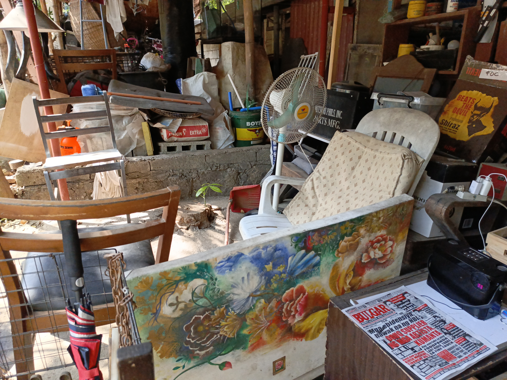

Here lies my reality,
Where I spend most of my time
Thinking of words to rhyme
As I admire those around me.
This is my shared world,
A world with those nearby,
A world where time seems to fly,
A world where nothing is unheard.

It is chaotic and messy,
Yet it is where I feel most free,
It is the place that inspires me,
It is the place where I found tranquility,
A place filled with beauty,
A place where I would like to be,
Where I can wonder for as far as the eye can see,
A place that is chaotic and messy,
Yet it is a place I treat so dearly
This place is,